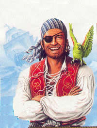

Pirata
 De: La Frikipedia, la enciclopedia extremadamente seria.
De: La Frikipedia, la enciclopedia extremadamente seria.
| De la serie tribus urbanas del mundo:
|
| Pirata
|
Ejemplo de la tribu

|
| Pirata estándard
|
|
| Hábitat
|
La mar salada, el ordenador, Tepito
|
| Inteligencia
|
¿Crees que es inteligente vivir en el mar?
|
| Frase favorita
|
¡Argh!, ¡Puerto a la vista! (Para el SubSeven), ¡Yo te lo quemo!
|
| ¿Peligroso?
|
Es su principal ocupación
|
| Obsesión
|
¡Saquear!, ¡saquear!, ¡saquear!
|
| Notas
|
Siempre les falta un ojo o una extremidad
|
«¡Quisiera ser Pirata; no por el oro ni por la plata, sino por ese tesoro que tienes entre tus pat.. »
~ Un pirata Grosero Fabulas del pirata Casanova
«¡Hola! Soy Guybrush Threepwood y voy a ser un gran pirata»
~ Guybrush Threepwood sin venir a cuento de nada
«¡Me convertiré en el rey de los piratas!»
~ Monkey D. Luffy de One Piece con su mantra canónico
«Los piratas no usan computadoras ni instrumentos musicales: usan armas»
~ Richard Stallman después de una paja mental linuxera
- Persona, normal o no, que RESPIRA aire.
- Robin Hood moderno (supuestos familiares).
- Persona que cuenta con un número excepcional de ojos.
- Cualquiera con un loro y una pata de palo.
- Inglés (cualquiera).
- El trío que forma Pinki Winki con otros dos piratas y que intentan derribar al Chino Cudeiro.
- Garfio en lugar de una mano.
- Supuesto grupo indie de Ivan Ferreiro alias "el teleles"
- Individuo que forma parte del credo al Monstruo del Espagueti Volador (aka. Flying Spaghetti Monster)
- Persona que habla el cataliliense
Persona que roba música de los cederrones, colabora con el terrorismo islámico y cuyos planes persiguen la conquista del Creative Commons para lanzar una música que no se pueda vender y así eliminar a las discográficas para dejar indefensos a los verdaderos artistas, poder suplantarlos y así destruir la cultura, paso indispensable para dominar el universo.
Los piratas se distinguen del resto de la gente por que tienen pinta de malos, llevan pantalones piratas, no ven OT y utilizan herramientas para el pirateo como grabadoras de DVD (se sospecha que los piratas están infiltrados en Sony y demás compañías y que por ello las grabadoras pueden grabar discos piratas) y programas como Mero BurningOut, el bloc de notas, Word, Visual Basic y Windows.
Uno de los piratas mas famosos e importantes es Guybrush Threepwood, y una de las frases mas célebres es: Ron, ron, ron la botella de ron (Sin sentido aparente).
|
Himno del pirata informático

|
Con diez mil gigas por banda ancha
ratón en popa y a todo bit
no corta la red sino vuela,
un pirata bergantín,
sabio pirata que llaman
por su cerebro es temido
en toda la red conocido
hasta por el mismísimo Bill Gates
en el chat gime el viento
y descarga en raudo movimiento
programas de mac y pc,
y ve el capitán pirata
cantando alegre en la popa
el Pentágono a un lado, al otro el Kremlin
los datos que voy piratear, ya veras tu.
navega ordenata mío,
sin temor,
que ni códigos,
ni parches de protección,
tu rumbo a torcer alcanzan,
ni a sujetar tu ratón.
veinte presas
hemos hecho
a despecho de Bill Gates
y han reconocido
mis cojones
cien naciones
a mis pies.
que es mi ordenata, mi tesoro
que todo el mundo ha de temer.
mi ley el ratón y el módem
mi única patria, la red.
|

|
| El himno del pirata informático, By Nikro (con perdón de José Espronceda)
|
|
Canción Pirata
|
|
Ha ha somos así
ser un pirata me hace felíz
siempre decido lo que quiero hacer
somos piratas.
Somos Piratas ¡¡SI!!
y tenemos un mapa ¡¡MAPA!!
al tesoro nos guiara y muy escondido esta ¡¡ESTA!!
Vamos a explorar
Hasta encontrar el tesoro, y sus joyas
¡¡Y VAS A CELEBRAR!!
Ha Ha Somos así
si navegas por el mar
Eres Pirata
¡¡TIEEEEERRRRRAAAAA!!
Ha ha somos así
ser un pirata me hace feliz
siempre decido lo que quiero hacer
somos piratas.
|
|
| Canción pirata de cualquier friki
|
|
Conocidos piratas

¿Quien dice que los piratas no puedan ir a la moda?
- Don Ramón
- el pirata de Humor Amarillo
- Juan Carlos Garfio
- Garfio
- The_am0
- Leila Ylönen las boludas
- El PolyStation
- Brian Recchi
- Link186
- Sega
- Mario
- IP anónima
- Pipi Calzaslargas
- Doraemon (además de camello)
- Monkey.D.Luffy
- Jack Sparrot Sparrow
- Johnny Depp
- Chow Yun-Fat
- Tu vieja
- Bartholomew Roberts "Black Bart" (Bartolomé Roberto "Bart negro")
- Henry Morgan (Hernan Morón)
- Jean David Nau, L'Olonnais (Juan David Navo "El Olonés")
- Edward Teach "Blackbeard" (Eduardo Enseña "Barbanegra")
- Swantum
- Ann Bonny (Ana Bono)
- Mary Read (Mariana Lee)
Enemigos de los piratas

Un mapa pirata que dice:
Baje hacia abajo, gire a su derecha y entre- Tu vieja
- La concha de tu tío
- Sony
- Noentiendo
- Hasecorp
- ESET NOD32
- Kaspersky
- kunG-fu PANDA
- Bullshit Defender
- Ricardo Arjona
- Reino Unido
- Francia
- Play Station 3
- España (Mejor conocida como Espiña)
- Ad-Aware Pro 2008 (Lavasoft)
- Gafapasta
- norton
- julia julio cesar
- Perry
- Blu-Ray Disc
Enlaces externos
| Tribus Urbanas
|
 Universales Universales
 Españolas Españolas
 Argentinas Argentinas
 Chilenas Chilenas
 Colombianas Colombianas
 Mexicanas Mexicanas
 Peruanas Peruanas
 Venezolanas Venezolanas
|
Autor(es):
- Krusher
- Nexo
- Bandarako
- DonkeyG5
- Peewack
- Mithran
- AHUEHUETE
- Barbadeus Motsand
- MURO DE AGUAS
- Andronicus
Frikipedia 2005-2016, Licencia
GFDL 1.2 - Extraído por FrikiLeaks